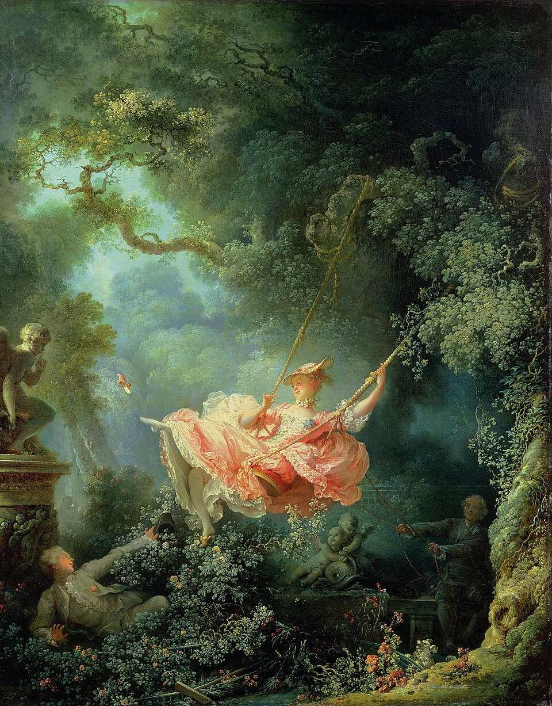

The Swing
| Artist | Jean-Honoré Fragonard |
|---|---|
| Date | 1767–68 |
| Type | Painting |
| Medium | Oil on canvas |
| Location | Wallace Collection, London |
| Region | Europe |
| Era | Baroque and Rococo |
| Movement | Rococo |

A frothy, playful scene of a young woman on a swing in a lush garden, typical of Rococo's light, decorative spirit.